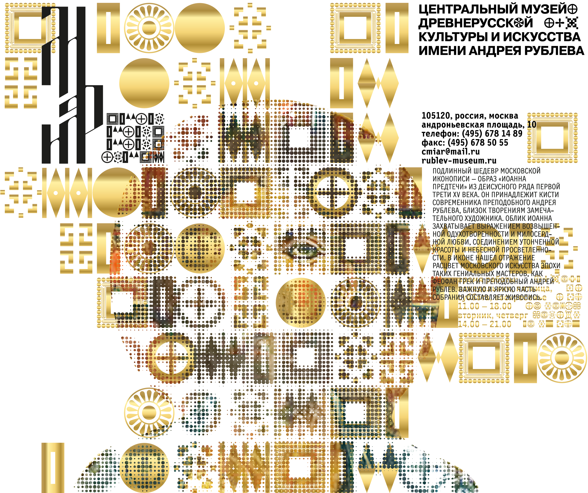

<!DOCTYPE html>
<html>
  <head>
    <meta charset="utf-8">
    <title>МУЗЕЙ ИМ. АНДРЕЯ РУБЛЕВА</title>

    <link rel="stylesheet" href="stylesheets/style.css">

    <script type="text/javascript" src="javascripts/jquery.js"></script>
    <script type="text/javascript" src="javascripts/history.js"></script>
    <script type="text/javascript" src="javascripts/scrollfix.js"></script>
    <script type="text/javascript" src="javascripts/gallery.js"></script>
  </head>
  <body>
    <section class="preload">
      <!--  -->
      <div class="white"></div>
    </section>

    <section class="main">

      <div class="logo">
        
      </div>

      <div id="layout" class="layout">
        
        <!--  -->
        <div class="gallery">
          
          
          
          
        </div>
        <div class="buttons">
          <div><div class="left"></div></div>
          <div><div class="right"></div></div>
        </div>
      </div>

      <section id="fixme" class="column1">
        <section class="sticky">
          <ul>
            <li><p>О МУЗЕЕ</p></li>
            <li><p>НОВОСТИ</p></li>
            <li><p>КАЛЕНДАРЬ <br>ВЫСТАВОК</p></li>
            <li><p>ПОСЕТИТЕЛЯМ</p></li>
            <li><p>КОЛЛЕКЦИЯ</p></li>
            <li><p>ОБРАЗОВАТЕЛЬНАЯ <br>ДЕЯТЕЛЬНОСТЬ</p></li>
            <li><p>СТРУКТУРА МУЗЕЯ</p></li>
            <li><p>СМИ О МУЗЕЕ</p></li>
            <li><p>КОНТАКТЫ</p></li>
          </ul>
        </section>
      </section>

      <section id="fixme2" class="column2">
        <section class="sticky2">
          <div>
            <ul>
              <li><p class="museumHistory">ИСТОРИЯ <br>МУЗЕЯ</p></li>
              <li><p class="museumArchitecture">АРХИТЕКТУРНЫЙ <br>КОМПЛЕКС</p></li>
              <li><p>СМИ О МУЗЕЕ</p></li>
            </ul>
          </div>
        </section>
      </section>

      <section class="column3">
        <article class="museumArchitectureArticle">
          <h1>О МУЗЕЕ</h1>
          <h2>СПАСО-АНДРОНИКОВ МОНАСТЫРЬ / АРХИТЕКТУРНЫЙ КОМПЛЕКС</h2>
          <p>На протяжении XVI и особенно XVII-XVIII веках в монастыре ведется каменное строительство, возводятся стены и башни, надвратная Рождественская церковь, несколько корпусов.</p>
          <p>Позднее монастырь был связан с родом Лопухиных. По инициативе супруги Петра I царицы Евдокии Федоровны в 90-е годы XVII века к трапезной палате пристраивается многоярусный храм Архангела Михаила.</p>
          <p>Древний монастырский Спасский храм с многоярусным завершением относится к выдающимся образцам раннемосковского белокаменного зодчества наряду с Успенским собором в Звенигороде и Троицким собором Троице Сергиевой лавры. По всей вероятности, он сооружен во втором-третьем десятилетиях XV века. Позднее храм был разорен, но архитектура его интерьера до сих пор завораживает тонкостью пропорций и устремленностью в высь. Не исключено, что внутри собор имел резные детали, а его пол был декорирован узорными керамическими плитками.</p>
          <p>Одностолпная Трапезная палата с мощными сводами на втором этаже имела высокий подклет (первый этаж) с хозяйственными помещениями, прежде всего кухней. По архитектуре здание сходно Грановитой палатой Московского Кремля конца XV столетия. Пристроенный к ней трехэтажный храм Архангела Михаила существенно обогатил облик монастыря. Кроме основного престола здесь находились храмы Апостолов Петра и Павла, Митрополита Алексия и Знаменская церковь с усыпальницей Лопухиных. Сложная судьба породнившегося с царской семьей боярского рода обусловила длительность строительства комплекса. Завершенный в 1739 году, он получил черты стиля московского (или нарышкинского) барокко.</p>
          <p>Лишенный надвратной церкви, колокольни и других построек в своем настоящем виде ансамбль Спасо-Андроникова монастыря все же позволяет оценить его главные памятники и прежде всего Спасский собор.</p>
          <p>В 1918 году Спасо-Андроников монастырь был упразднен.</p>
          
        </article>

        <article class="museumHistoryArticle hidden">
          <h1>О МУЗЕЕ</h1>
          <h2>ИСТОРИЯ МУЗЕЯ</h2>
          <p>В 1947 году, на волне послевоенного патриотического подъема, в год празднования 800-летия Москвы, на территории монастыря был образован Музей им. Андрея Рублева. Его первым директором стал крупный организатор музейного строительства Д.И. Арсенишвили (1905-1963), первым научным сотрудником – выдающийся знаток творчества прп. Андрея Рублева Н.А. Демина (1904-1990). В 2001 году музей отметил их заслуги мемориальными доскам работы скульпторов З.К. Церетели и В.А. Суворова.</p>
          <p>К моменту основания Музея монастырь был полностью разорен, музейная коллекция собиралась буквально по крохам, в обстановке крайне негативного отношения государства к отечественному религиозному наследию. Собранные произведения зачастую требовали тщательной и многолетней реставрации. Тем не менее через 13 лет, 21 сентября 1960 года, Музей был открыт и представлен на суд посетителей залы с десятками раскрытых от поздних записей и грязи икон, снятых со стен разрушенных храмов росписей и произведений декоративно-прикладного искусства. Собирательская деятельность и реставрационные работы продолжаются до настоящего времени и являются неотъемлемой частью повседневной музейной жизни.</p>
          <p>Ныне экспозиция занимает все отреставрированные и доступные для осмотра помещения трапезной палаты и церкви Архангела Михаила. В Настоятельском корпусе размещается выставочный зал.</p>

        </article>

      </section>

      <section id="fixme3" class="column4">
        <p>
          ВРЕМЯ РАБОТЫ МУЗЕЯ:
          <br><br>
          ПН, СБ И ВС<br>11.00 - 18.00,<br>КАССА - ДО 17.15
          <br><br>
          ВТ И ЧТ<br>14.00 - 21.00,<br> КАССА - ДО 20.15.<br>
          В СРЕДУ МУЗЕЙ ЗАКРЫТ
        </p>

        <ul>
          <li><a href="">СПЛАНИРОВАТЬ ВИЗИТ</a></li>
          <li><a href="">МЕСТОПОЛОЖЕНИЕ</a></li>
          <li><a href="#">ЭКСКУРСИИ</a></li>
        </ul>

        <div class="socials">
          <div><i class="fa fa-facebook" aria-hidden="true"></i></div>
          <div><i class="fa fa-vk" aria-hidden="true"></i></div>
          <div><i class="fa fa-twitter" aria-hidden="true"></i></div>
          <div><i class="fa fa-tripadvisor" aria-hidden="true"></i></div>
        </div>
      </section>

    </section>
  </body>
</html>
